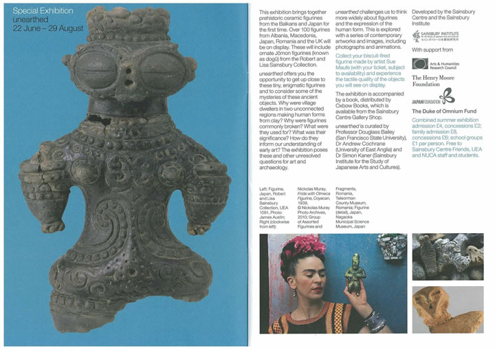

|  |
| 【Special Exhibision [Unearthed] リーフレット】 →拡大して表示 |
Special Exhibision [Unearthed]（特別展示『発掘展』）
【期 間】２０１０年６月２２日（日）～８月２９日（日）
【会 場】ローワーギャラリー
Sainsbury Centre for visual Arts - University of East Anglia, Norwich
（ノリッジ、イーストアングリア大学 セインズベリー視覚芸術センター）
現在、イングランドのノリッジ市で特別展示『発掘展』が開催され、
展示に沿ったワークショップなどが催されています。
セインズベリー日本藝術研究所の招待により、ワークショップへの出演・参加のため
猪風来が訪英することとなりました。
８月２５日、猪風来作品と作品映像を前にした、猪風来によるギャラリートークを予定。
講演テーマは《現代の芸術と縄文》。
――猪風来の芸術世界は、縄文土器・土偶から何を学び、どのような現代芸術を展開しているか？
また、ノーフォーク州の人々や陶芸家らとの交流活動も予定されています。
=∴=∵=∴=∵=∴=∵=∴=∵=∴=∵=∴=∵=∴=∵=∴=∵=∴=∵=∴=∵=∴=∵=∴=∵=∴=∵=∴=
セインズベリー日本藝術研究所は、日英の文化芸術交流を深める諸活動を行っている。
現在開催している Special Exhibision [Unearthed]（特別展示『発掘展』）では
日本やバルカン半島などの精緻な土偶が展示されており、縄文をはじめとする土偶オブジェの謎を解明し
現代の新しい表現へ繋がるものとしての『発掘』を主題としている。